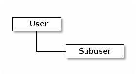

Admin Guide¶
Once you have your Ceph Object Storage service up and running, you may administer the service with user management, access controls, quotas and usage tracking among other features.
User Management¶
Ceph Object Storage user management refers to users of the Ceph Object Storage service (i.e., not the Ceph Object Gateway as a user of the Ceph Storage Cluster). You must create a user, access key and secret to enable end users to interact with Ceph Object Gateway services.
There are two user types:
- User: The term ‘user’ reflects a user of the S3 interface.
- Subuser: The term ‘subuser’ reflects a user of the Swift interface. A subuser is associated to a user .

You can create, modify, view, suspend and remove users and subusers. In addition to user and subuser IDs, you may add a display name and an email address for a user. You can specify a key and secret, or generate a key and secret automatically. When generating or specifying keys, note that user IDs correspond to an S3 key type and subuser IDs correspond to a swift key type. Swift keys also have access levels of read, write, readwrite and full.
Create a User¶
To create a user (S3 interface), execute the following:
radosgw-admin user create --uid={username} --display-name="{display-name}" [--email={email}]
For example:
radosgw-admin user create --uid=johndoe --display-name="John Doe" --email=john@example.com
{ "user_id": "johndoe",
"display_name": "John Doe",
"email": "john@example.com",
"suspended": 0,
"max_buckets": 1000,
"auid": 0,
"subusers": [],
"keys": [
{ "user": "johndoe",
"access_key": "11BS02LGFB6AL6H1ADMW",
"secret_key": "vzCEkuryfn060dfee4fgQPqFrncKEIkh3ZcdOANY"}],
"swift_keys": [],
"caps": [],
"op_mask": "read, write, delete",
"default_placement": "",
"placement_tags": [],
"bucket_quota": { "enabled": false,
"max_size_kb": -1,
"max_objects": -1},
"user_quota": { "enabled": false,
"max_size_kb": -1,
"max_objects": -1},
"temp_url_keys": []}
Creating a user also creates an access_key and secret_key entry for use with any S3 API-compatible client.
Important
Check the key output. Sometimes radosgw-admin generates a JSON escape (\) character, and some clients do not know how to handle JSON escape characters. Remedies include removing the JSON escape character (\), encapsulating the string in quotes, regenerating the key and ensuring that it does not have a JSON escape character or specify the key and secret manually.
Create a Subuser¶
To create a subuser (Swift interface) for the user, you must specify the user ID (--uid={username}), a subuser ID and the access level for the subuser.
radosgw-admin subuser create --uid={uid} --subuser={uid} --access=[ read | write | readwrite | full ]
For example:
radosgw-admin subuser create --uid=johndoe --subuser=johndoe:swift --access=full
Note
full is not readwrite, as it also includes the access control policy.
{ "user_id": "johndoe",
"display_name": "John Doe",
"email": "john@example.com",
"suspended": 0,
"max_buckets": 1000,
"auid": 0,
"subusers": [
{ "id": "johndoe:swift",
"permissions": "full-control"}],
"keys": [
{ "user": "johndoe",
"access_key": "11BS02LGFB6AL6H1ADMW",
"secret_key": "vzCEkuryfn060dfee4fgQPqFrncKEIkh3ZcdOANY"}],
"swift_keys": [],
"caps": [],
"op_mask": "read, write, delete",
"default_placement": "",
"placement_tags": [],
"bucket_quota": { "enabled": false,
"max_size_kb": -1,
"max_objects": -1},
"user_quota": { "enabled": false,
"max_size_kb": -1,
"max_objects": -1},
"temp_url_keys": []}
Get User Info¶
To get information about a user, you must specify user info and the user ID (--uid={username}) .
radosgw-admin user info --uid=johndoe
Modify User Info¶
To modify information about a user, you must specify the user ID (--uid={username}) and the attributes you want to modify. Typical modifications are to keys and secrets, email addresses, display names and access levels. For example:
radosgw-admin user modify --uid=johndoe --display-name="John E. Doe"
To modify subuser values, specify subuser modify and the subuser ID. For example:
radosgw-admin subuser modify --uid=johndoe:swift --access=full
User Enable/Suspend¶
When you create a user, the user is enabled by default. However, you may suspend user privileges and re-enable them at a later time. To suspend a user, specify user suspend and the user ID.
radosgw-admin user suspend --uid=johndoe
To re-enable a suspended user, specify user enable and the user ID.
radosgw-admin user enable --uid=johndoe
Note
Disabling the user disables the subuser.
Remove a User¶
When you remove a user, the user and subuser are removed from the system. However, you may remove just the subuser if you wish. To remove a user (and subuser), specify user rm and the user ID.
radosgw-admin user rm --uid=johndoe
To remove the subuser only, specify subuser rm and the subuser ID.
radosgw-admin subuser rm --uid=johndoe:swift
Options include:
- Purge Data: The --purge-data option purges all data associated to the UID.
- Purge Keys: The --purge-keys option purges all keys associated to the UID.
Remove a Subuser¶
When you remove a sub user, you are removing access to the Swift interface. The user will remain in the system. The Ceph Object Gateway To remove the subuser, specify subuser rm and the subuser ID.
radosgw-admin subuser rm --uid=johndoe:swift
Options include:
- Purge Keys: The --purge-keys option purges all keys associated to the UID.
Create a Key¶
To create a key for a user, you must specify key create. For a user, specify the user ID and the s3 key type. To create a key for subuser, you must specify the subuser ID and the swift keytype. For example:
radosgw-admin key create --subuser=johndoe:swift --key-type=swift --gen-secret
{ "user_id": "johndoe",
"rados_uid": 0,
"display_name": "John Doe",
"email": "john@example.com",
"suspended": 0,
"subusers": [
{ "id": "johndoe:swift",
"permissions": "full-control"}],
"keys": [
{ "user": "johndoe",
"access_key": "QFAMEDSJP5DEKJO0DDXY",
"secret_key": "iaSFLDVvDdQt6lkNzHyW4fPLZugBAI1g17LO0+87"}],
"swift_keys": [
{ "user": "johndoe:swift",
"secret_key": "E9T2rUZNu2gxUjcwUBO8n\/Ev4KX6\/GprEuH4qhu1"}]}
Add / Remove Access Keys¶
Users and subusers must have access keys to use the S3 and Swift interfaces. When you create a user or subuser and you do not specify an access key and secret, the key and secret get generated automatically. You may create a key and either specify or generate the access key and/or secret. You may also remove an access key and secret. Options include:
- --secret=<key> specifies a secret key (e.g,. manually generated).
- --gen-access-key generates random access key (for S3 user by default).
- --gen-secret generates a random secret key.
- --key-type=<type> specifies a key type. The options are: swift, s3
To add a key, specify the user.
radosgw-admin key create --uid=johndoe --key-type=s3 --gen-access-key --gen-secret
You may also specify a key and a secret.
To remove an access key, specify the user.
radosgw-admin key rm --uid=johndoe
Add / Remove Admin Capabilities¶
The Ceph Storage Cluster provides an administrative API that enables users to execute administrative functions via the REST API. By default, users do NOT have access to this API. To enable a user to exercise administrative functionality, provide the user with administrative capabilities.
To add administrative capabilities to a user, execute the following:
radosgw-admin caps add --uid={uid} --caps={caps}
You can add read, write or all capabilities to users, buckets, metadata and usage (utilization). For example:
--caps="[users|buckets|metadata|usage|zone]=[*|read|write|read, write]"
For example:
radosgw-admin caps add --uid=johndoe --caps="users=*"
To remove administrative capabilities from a user, execute the following:
radosgw-admin caps remove --uid=johndoe --caps={caps}
Quota Management¶
The Ceph Object Gateway enables you to set quotas on users and buckets owned by users. Quotas include the maximum number of objects in a bucket and the maximum storage size in megabytes.
- Bucket: The --bucket option allows you to specify a quota for buckets the user owns.
- Maximum Objects: The --max-objects setting allows you to specify the maximum number of objects. A negative value disables this setting.
- Maximum Size: The --max-size option allows you to specify a quota for the maximum number of bytes. A negative value disables this setting.
- Quota Scope: The --quota-scope option sets the scope for the quota. The options are bucket and user. Bucket quotas apply to buckets a user owns. User quotas apply to a user.
Set User Quota¶
Before you enable a quota, you must first set the quota parameters. For example:
radosgw-admin quota set --quota-scope=user --uid=<uid> [--max-objects=<num objects>] [--max-size=<max size>]
For example:
radosgw-admin quota set --quota-scope=user --uid=johndoe --max-objects=1024 --max-size=1024
A negative value for num objects and / or max size means that the specific quota attribute check is disabled.
Enable/Disable User Quota¶
Once you set a user quota, you may enable it. For example:
radosgw-admin quota enable --quota-scope=user --uid=<uid>
You may disable an enabled user quota. For example:
radosgw-admin quota-disable --quota-scope=user --uid=<uid>
Set Bucket Quota¶
Bucket quotas apply to the buckets owned by the specified uid. They are independent of the user.
radosgw-admin quota set --uid=<uid> --quota-scope=bucket [--max-objects=<num objects>] [--max-size=<max size]
A negative value for num objects and / or max size means that the specific quota attribute check is disabled.
Enable/Disable Bucket Quota¶
Once you set a bucket quota, you may enable it. For example:
radosgw-admin quota enable --quota-scope=bucket --uid=<uid>
You may disable an enabled bucket quota. For example:
radosgw-admin quota-disable --quota-scope=bucket --uid=<uid>
Get Quota Settings¶
You may access each user’s quota settings via the user information API. To read user quota setting information with the CLI interface, execute the following:
radosgw-admin user info --uid=<uid>
Update Quota Stats¶
Quota stats get updated asynchronously. You can update quota statistics for all users and all buckets manually to retrieve the latest quota stats.
radosgw-admin user stats --uid=<uid> --sync-stats
Get User Usage Stats¶
To see how much of the quota a user has consumed, execute the following:
radosgw-admin user stats --uid=<uid>
Note
You should execute radosgw-admin user stats with the --sync-stats option to receive the latest data.
Reading / Writing Global Quotas¶
You can read and write quota settings in a region map. To get a region map, execute the following.
radosgw-admin regionmap get > regionmap.json
To set quota settings for the entire region, simply modify the quota settings in the region map. Then, use region set to update the region map.
radosgw-admin region set < regionmap.json
Note
After updating the region map, you must restart the gateway.
Usage¶
The Ceph Object Gateway logs usage for each user. You can track user usage within date ranges too.
Options include:
- Start Date: The --start-date option allows you to filter usage stats from a particular start date (format: yyyy-mm-dd[HH:MM:SS]).
- End Date: The --end-date option allows you to filter usage up to a particular date (format: yyyy-mm-dd[HH:MM:SS]).
- Log Entries: The --show-log-entries option allows you to specify whether or not to include log entries with the usage stats (options: true | false).
Note
You may specify time with minutes and seconds, but it is stored with 1 hour resolution.
Show Usage¶
To show usage statistics, specify the usage show. To show usage for a particular user, you must specify a user ID. You may also specify a start date, end date, and whether or not to show log entries.:
radosgw-admin usage show --uid=johndoe --start-date=2012-03-01 --end-date=2012-04-01
You may also show a summary of usage information for all users by omitting a user ID.
radosgw-admin usage show --show-log-entries=false
Trim Usage¶
With heavy use, usage logs can begin to take up storage space. You can trim usage logs for all users and for specific users. You may also specify date ranges for trim operations.
radosgw-admin usage trim --start-date=2010-01-01 --end-date=2010-12-31
radosgw-admin usage trim --uid=johndoe
radosgw-admin usage trim --uid=johndoe --end-date=2013-12-31